17页视觉对照01 · 登录
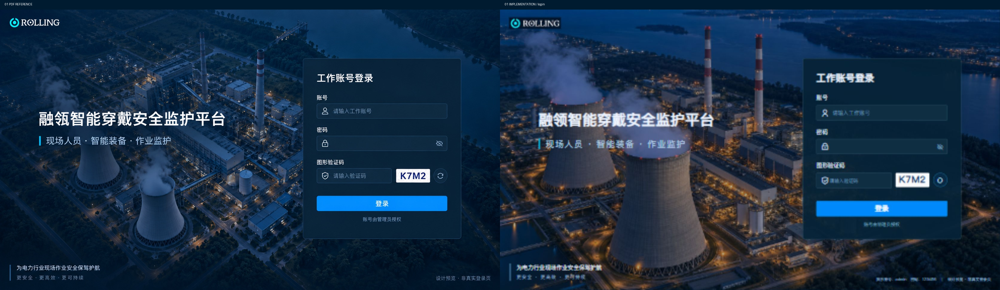
打开对应页面 →02 · 综合总览
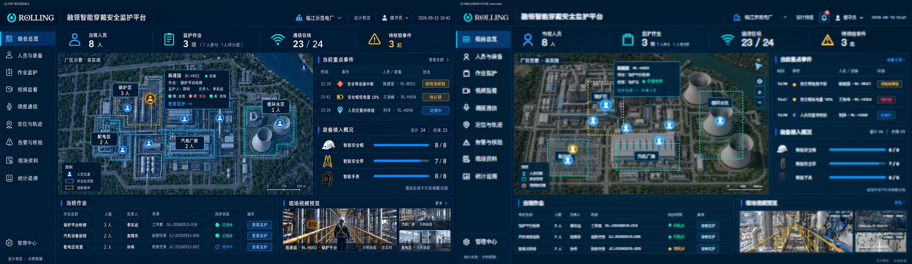
打开对应页面 →03 · 人员与装备
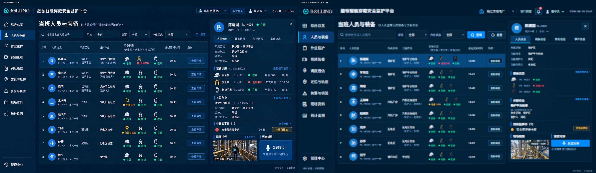
打开对应页面 →04 · 人员详情
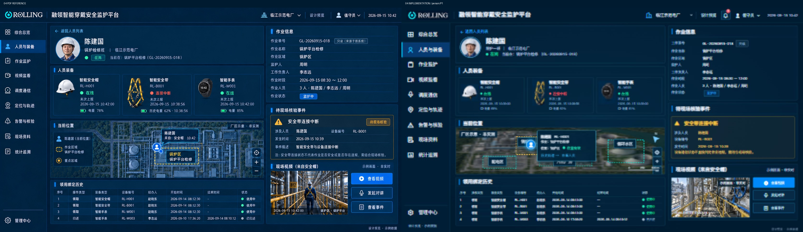
打开对应页面 →05 · 作业列表
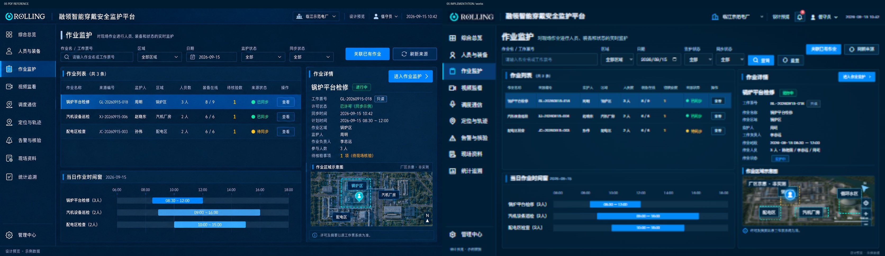
打开对应页面 →06 · 作业监护
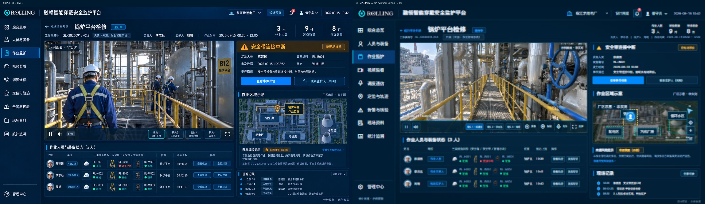
打开对应页面 →07 · 视频墙
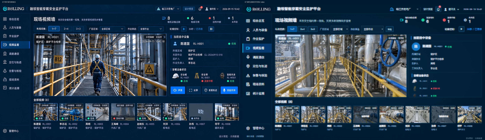
打开对应页面 →08 · 单路监看
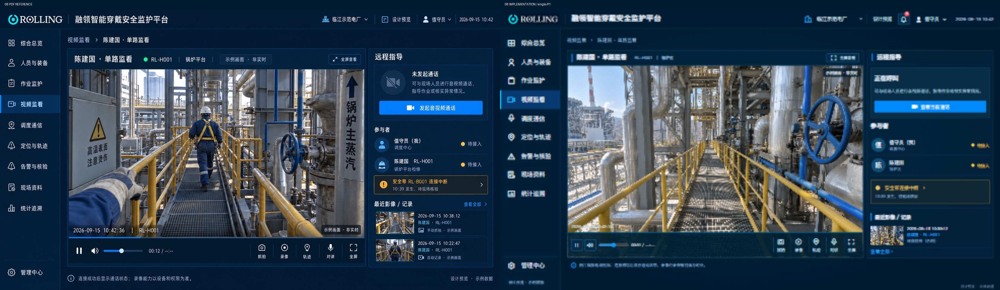
打开对应页面 →09 · 现场资料
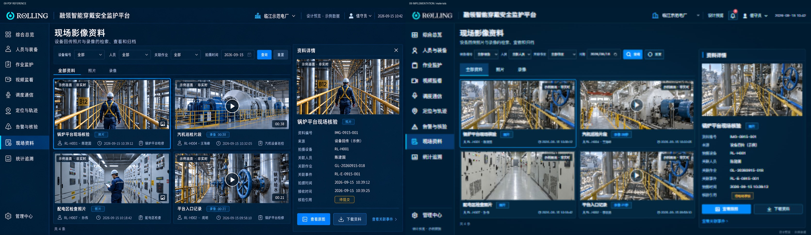
打开对应页面 →10 · 实时定位
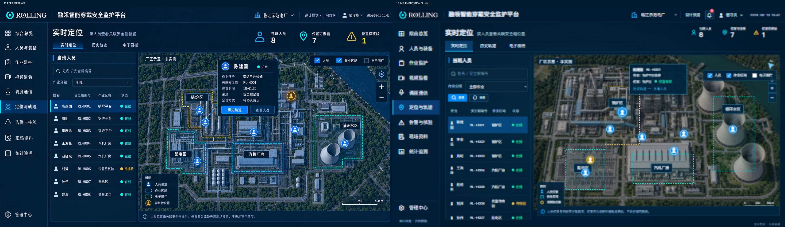
打开对应页面 →11 · 历史轨迹
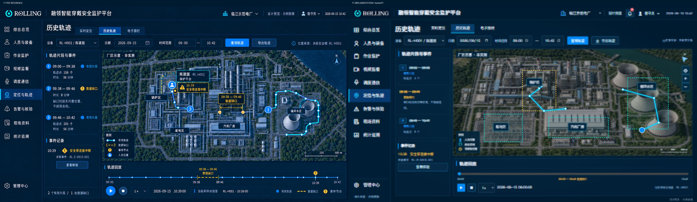
打开对应页面 →12 · 电子围栏
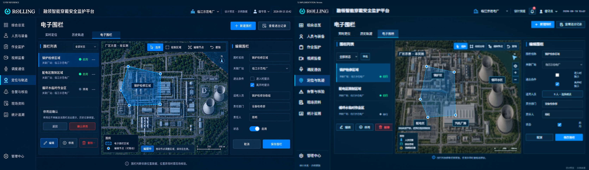
打开对应页面 →13 · 告警列表
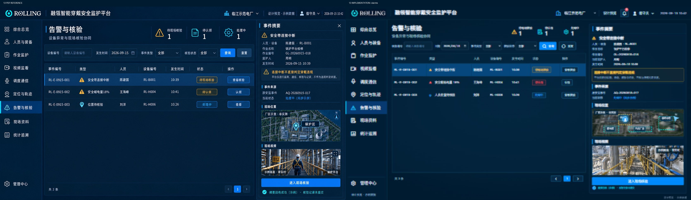
打开对应页面 →14 · 核验详情
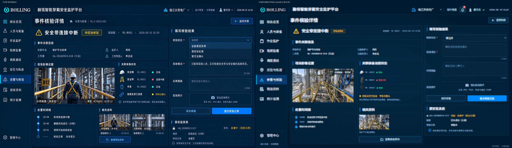
打开对应页面 →15 · 调度通信
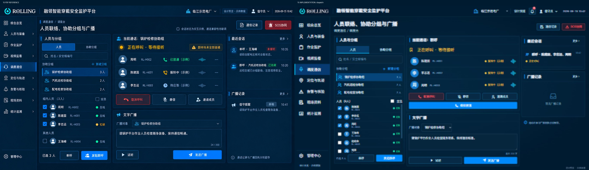
打开对应页面 →16 · SOS协同
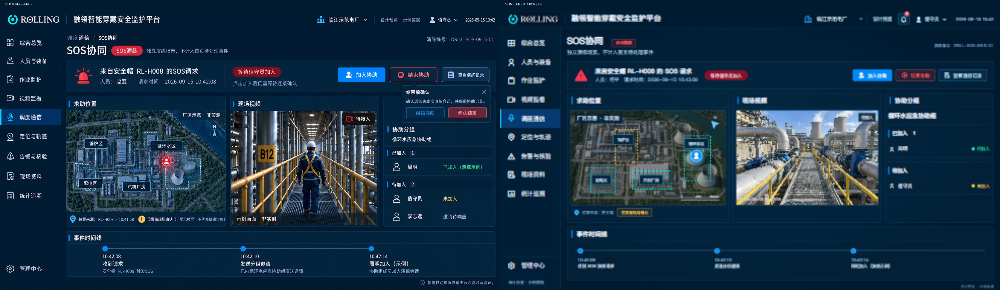
打开对应页面 →17 · 统计追溯
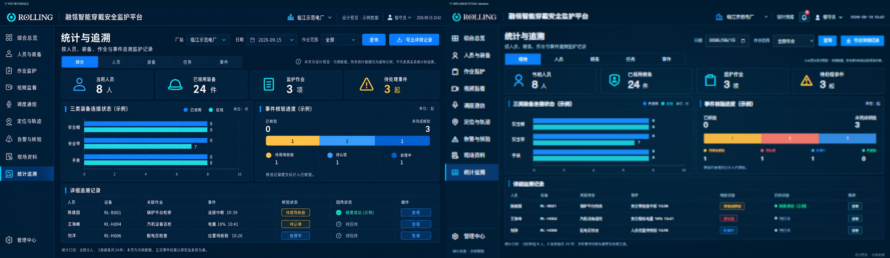
打开对应页面 →